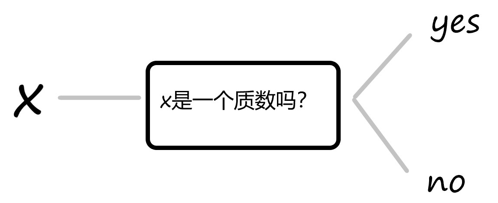
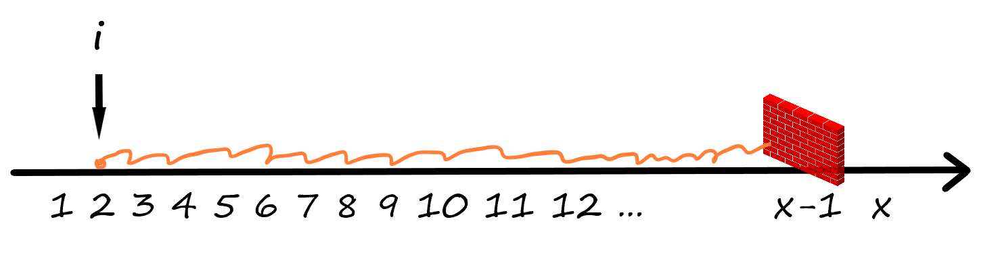
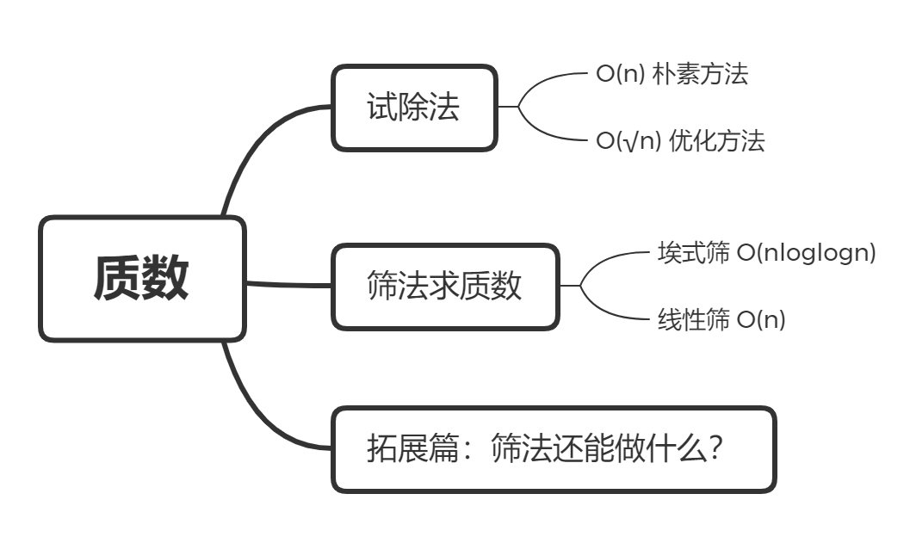
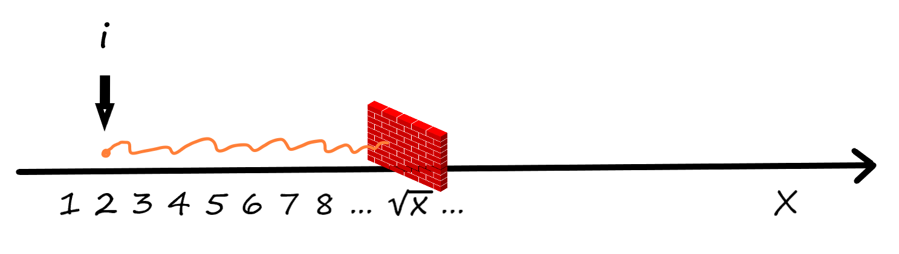

筛法求质数

质数又称素数。一个大于1的自然数，除了1和它本身外，不能被其他自然数整除，就叫质数，否则称为合数。
此外特别规定，1既不是质数，也不是合数。
本章的内容将围绕如何快速求出质数展开。
预习篇
1.自然数，整除，因数，约数
先来回忆几个数学概念：
自然数集是全体非负整数组成的集合，表示为
整除是两个自然数之间的一种关系。
自然数
if (a % b == 0) { printf("b整除了a.");} 2. 质数和朴素试除法
质数是指只能被1和其自身整除的数。
判断一个数
xxxxxxxxxx// 写成函数形式的试除法，若为合数函数返回0，为质数函数返回1bool isPrime(int x) { if (x < 2) return 0; for (int i = 2; i < x; i++) { if (x % i == 0) return 0; } return 1;}程序的过程，就像在数轴

完成预习题目，温习质数知识：
难度升级，嘣嘣嘣嘣~
❓如果给定的数字是一个小于
课后篇

1.1 更优的试除法
上过课的你肯定知道了更好的试除法，不需要试验到x-1，而只需要试验到
xxxxxxxxxx// 优化后的试除法bool isPrime(long long x) { if (x < 2) return 0; // 将 i < x 优化为 i * i <= x for (long long i = 2; i * i <= x; i++) { if (x % i == 0) return 0; } return 1;}可以理解为，墙从

优化后的试除法，对于预习篇中1个的较大数字够用了，但是如果要是判断n个数字是否为质数，当n的大小为
1.2 朴素筛法
所谓筛法，把所有不是质数的数筛去，剩下的就是质数了。对于两个大于
xconst int N = 1e6+10; // 筛出10^6 以内的所有质数int primes[N], idx; // 数组primes用来存放质数，idx是数组模拟指针bool st[N]; // st[i]为0表示i为质数，为1表示i为合数
for (int i = 2; i < N; i++) { if (!st[i]) { //如果i没有被筛出去 primes[idx++] = i; //那么i是一个质数 } for (int j = 2 * i; j < N; j += i) { // 将i的所有倍数都标记为合数 st[j] = 1; }}朴素筛的算法为
观察朴素的筛法能够得到一个启发，一个合数必定有一个质因子。那么就只用质数进行筛，这个效率就能提高了。这种想法就是埃式筛。
1.3 埃拉托斯特尼筛法（sieve of Eratosthenes）
埃式筛得名于古希腊数学家埃拉托塞尼（Eratosthenes），他计算了地球的周长，并且设计了现在为人熟知的经纬系统。
埃式筛用来找出一定范围的所有质数，它的原理非常简单，从2开始，将每个质数的倍数标记成合数。时间复杂度为
实现的过程中先定出要筛数值
下面这张动图能够帮助我们理解这个过程：

xxxxxxxxxxconst int N = 1e6+10; // 筛出10^6 以内的所有质数int primes[N], idx; // 数组primes用来存放质数，idx是数组模拟指针bool st[N]; // st[i]为0表示i为质数，为1表示i为合数
void eSieve() { // 只要判断到根号N就可以把N以内所有质数筛出 for (int i = 2; i * i < N; i++) { // 如果i是质数，则要把i的所有倍数都标记为合数 if (!st[i]) { // 将i放进质数数组 primes[idx++] = i; // 如果i * i超过N的范围则不标记，防止数组越界 if (1LL * i * i >= N) continue; /* 将i的所有倍数标为合数，这里筛的时候j从i*i开始，而不是从2*i开始 是因为 i 之前的倍数一定被之前的筛掉了*/ for (int j = i * i; j < N; j += i) { st[j] = 1; } } }}1.4 线性筛
仔细观看埃式筛的过程，比如数字12和18就被2和3各自筛掉一次，令一个合数
xxxxxxxxxxconst int N = 1e7+10; // 线性筛可以在1s内筛出10^7 以内的所有质数int primes[N], idx; // 数组primes用来存放质数，idx是数组模拟指针bool st[N]; // st[i]为0表示i为质数，为1表示i为合数
void lSieve() { for (int i = 2; i < N; i++) { if (!st[i]) { primes[idx++] = i; } for (int j = 0; j < idx && primes[j] * i < N; j++) { // 枚举当前所有质数 primes[j] st[i * primes[j]] = 1; // i的primes[j] 倍是合数 if (i % primes[j] == 0) break; // 线性筛的神奇之处~ } }}设
❓为什么增加一句判断就可以结束内层循环呢
证明充分性，合数
证明充分性，合数 break掉了。考虑因为
综上对于每一个合数，都只会被`st[i*primes[j]] = 1标记一次，实际执行不超过n次，整个算法复杂度不超过
1.5 必须要完成的作业
1.6 更多的练习
| 练习题 * 1 |
|---|
| 区间内的真素数 |
挑战篇
真题挑战
2021年CSP-J初赛第18题，阅读程序，原题有视频题解
xxxxxxxxxx1 #include <stdio.h>2 3 #define n 1000004 #define N n+15 6 int m;7 int a[N], b[N], c[N], d[N];8 int f[N], g[N];9 10 void init() 11 {12 f[1] = g[1] = 1;13 for (int i = 2; i <= n; i++) {14 if (!a[i]) {15 b[m++] = i;16 c[i] = 1, f[i] = 2;17 d[i] = 1, g[i] = i + 1;18 }19 for (int j = 0; j < m && b[j] * i <= n; j++) {20 int k = b[j];21 a[i * k] = 1;22 if (i % k == 0) {23 c[i * k] = c[i] + 1;24 f[i * k] = f[i] / c[i * k] * (c[i * k] + 1);25 d[i * k] = d[i];26 g[i * k] = g[i] * k + d[i];27 break;28 }29 else {30 c[i * k] = 1;31 f[i * k] = 2 * f[i];32 d[i * k] = g[i];33 g[i * k] = g[i] * (k + 1);34 }35 }36 }37 }3839 int main() 40 {41 init();42 43 int x;44 scanf("%d", &x);45 printf("%d %d\n", f[x], g[x]);46 return 0;47 }假设输入的
B.错误
2）第24行f[i * k] = f[i] / c[i * k] * (c[i * k] + 1)中的” f[i]/c[i*k]”可能存在无法整除而向下取整的情况。（）
A.正确
B.错误
3）在执行完
B.错误
•单选题
4）
B.
5）在执行完
B.24
C.25
D.26
6）当输入”1000”时，输出为（）。
A.”15 1340”
B.”15 2340”
C.”16 2340”
D.”16 1340”